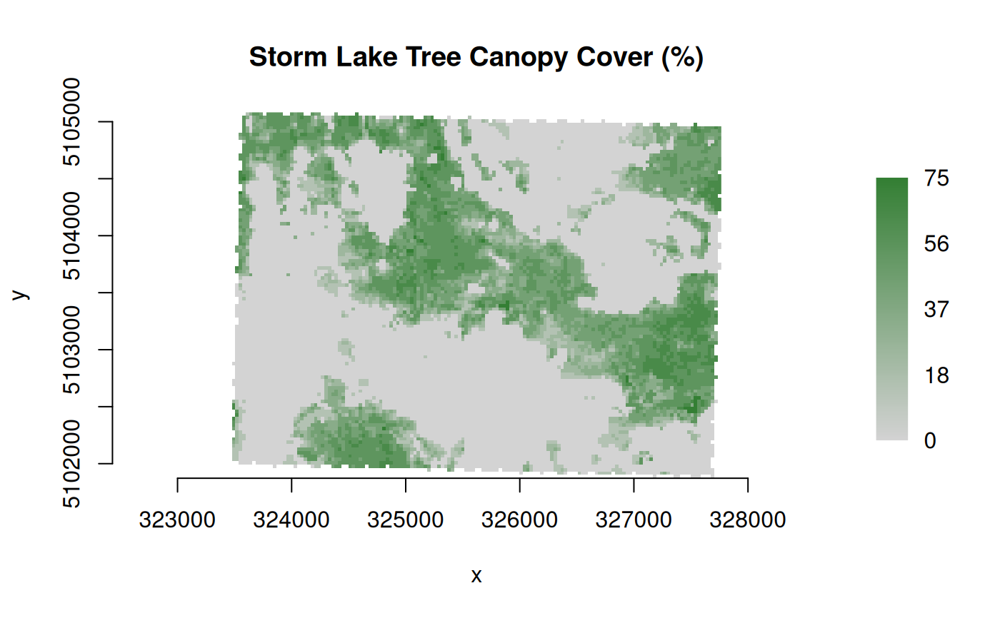

createColorRamp() is a wrapper for GDALCreateColorRamp() in the GDAL
API. It automatically creates a color ramp from one color entry to another.
Output is an integer matrix in color table format for use with
GDALRaster$setColorTable().
Arguments
- start_index
Integer start index (raster value).
- start_color
Integer vector of length three or four. A color entry value to start the ramp (e.g., RGB values).
- end_index
Integer end index (raster value).
- end_color
Integer vector of length three or four. A color entry value to end the ramp (e.g., RGB values).
- palette_interp
One of "Gray", "RGB" (the default), "CMYK" or "HLS" describing interpretation of
start_colorandend_colorvalues (see GDAL Color Table).
Value
Integer matrix with five columns containing the color ramp from
start_index to end_index, with raster index values in column 1 and
color entries in columns 2:5).
Note
createColorRamp() could be called several times, using rbind() to
combine multiple ramps into the same color table. Possible duplicate rows
in the resulting table are not a problem when used in
GDALRaster$setColorTable() (i.e., when end_color of one ramp is the
same as start_color of the next ramp).
Examples
# create a color ramp for tree canopy cover percent
# band 5 of an LCP file contains canopy cover
lcp_file <- system.file("extdata/storm_lake.lcp", package="gdalraster")
ds <- new(GDALRaster, lcp_file)
ds$getDescription(band=5)
#> [1] "Canopy cover"
ds$getMetadata(band=5, domain="")
#> [1] "CANOPY_COV_FILE=/netapp/sharedwebfs1/shared/landfire/public/temp_q8dTbIJ4w6Qi36Omkzk0/LCP_LF2022_FBFM40_220_CONUS/temp/merged_modified.tif"
#> [2] "CANOPY_COV_MAX=75"
#> [3] "CANOPY_COV_MIN=-9999"
#> [4] "CANOPY_COV_NUM_CLASSES=8"
#> [5] "CANOPY_COV_UNIT=1"
#> [6] "CANOPY_COV_UNIT_NAME=Percent"
ds$close()
# create a GTiff file with Byte data type for the canopy cover band
# recode nodata -9999 to 255
tcc_file <- calc(expr = "ifelse(CANCOV == -9999, 255, CANCOV)",
rasterfiles = lcp_file,
bands = 5,
var.names = "CANCOV",
fmt = "GTiff",
dtName = "Byte",
nodata_value = 255,
setRasterNodataValue = TRUE)
#> Calculating from 1 input layer(s)...
#> ================================================================================
#> Output written to: /tmp/RtmplRK485/rastcalc1e9f221a73d2.tif
ds_tcc <- new(GDALRaster, tcc_file, read_only=FALSE)
# create a color ramp from 0 to 100 and set as the color table
colors <- createColorRamp(start_index = 0,
start_color = c(211, 211, 211),
end_index = 100,
end_color = c(0, 100, 0))
print(colors)
#> value red green blue alpha
#> [1,] 0 211 211 211 255
#> [2,] 1 208 209 208 255
#> [3,] 2 206 208 206 255
#> [4,] 3 204 207 204 255
#> [5,] 4 202 206 202 255
#> [6,] 5 200 205 200 255
#> [7,] 6 198 204 198 255
#> [8,] 7 196 203 196 255
#> [9,] 8 194 202 194 255
#> [10,] 9 192 201 192 255
#> [11,] 10 189 199 189 255
#> [12,] 11 187 198 187 255
#> [13,] 12 185 197 185 255
#> [14,] 13 183 196 183 255
#> [15,] 14 181 195 181 255
#> [16,] 15 179 194 179 255
#> [17,] 16 177 193 177 255
#> [18,] 17 175 192 175 255
#> [19,] 18 173 191 173 255
#> [20,] 19 170 189 170 255
#> [21,] 20 168 188 168 255
#> [22,] 21 166 187 166 255
#> [23,] 22 164 186 164 255
#> [24,] 23 162 185 162 255
#> [25,] 24 160 184 160 255
#> [26,] 25 158 183 158 255
#> [27,] 26 156 182 156 255
#> [28,] 27 154 181 154 255
#> [29,] 28 151 179 151 255
#> [30,] 29 149 178 149 255
#> [31,] 30 147 177 147 255
#> [32,] 31 145 176 145 255
#> [33,] 32 143 175 143 255
#> [34,] 33 141 174 141 255
#> [35,] 34 139 173 139 255
#> [36,] 35 137 172 137 255
#> [37,] 36 135 171 135 255
#> [38,] 37 132 169 132 255
#> [39,] 38 130 168 130 255
#> [40,] 39 128 167 128 255
#> [41,] 40 126 166 126 255
#> [42,] 41 124 165 124 255
#> [43,] 42 122 164 122 255
#> [44,] 43 120 163 120 255
#> [45,] 44 118 162 118 255
#> [46,] 45 116 161 116 255
#> [47,] 46 113 159 113 255
#> [48,] 47 111 158 111 255
#> [49,] 48 109 157 109 255
#> [50,] 49 107 156 107 255
#> [51,] 50 105 155 105 255
#> [52,] 51 103 154 103 255
#> [53,] 52 101 153 101 255
#> [54,] 53 99 152 99 255
#> [55,] 54 97 151 97 255
#> [56,] 55 94 149 94 255
#> [57,] 56 92 148 92 255
#> [58,] 57 90 147 90 255
#> [59,] 58 88 146 88 255
#> [60,] 59 86 145 86 255
#> [61,] 60 84 144 84 255
#> [62,] 61 82 143 82 255
#> [63,] 62 80 142 80 255
#> [64,] 63 78 141 78 255
#> [65,] 64 75 139 75 255
#> [66,] 65 73 138 73 255
#> [67,] 66 71 137 71 255
#> [68,] 67 69 136 69 255
#> [69,] 68 67 135 67 255
#> [70,] 69 65 134 65 255
#> [71,] 70 63 133 63 255
#> [72,] 71 61 132 61 255
#> [73,] 72 59 131 59 255
#> [74,] 73 56 129 56 255
#> [75,] 74 54 128 54 255
#> [76,] 75 52 127 52 255
#> [77,] 76 50 126 50 255
#> [78,] 77 48 125 48 255
#> [79,] 78 46 124 46 255
#> [80,] 79 44 123 44 255
#> [81,] 80 42 122 42 255
#> [82,] 81 40 121 40 255
#> [83,] 82 37 119 37 255
#> [84,] 83 35 118 35 255
#> [85,] 84 33 117 33 255
#> [86,] 85 31 116 31 255
#> [87,] 86 29 115 29 255
#> [88,] 87 27 114 27 255
#> [89,] 88 25 113 25 255
#> [90,] 89 23 112 23 255
#> [91,] 90 21 111 21 255
#> [92,] 91 18 109 18 255
#> [93,] 92 16 108 16 255
#> [94,] 93 14 107 14 255
#> [95,] 94 12 106 12 255
#> [96,] 95 10 105 10 255
#> [97,] 96 8 104 8 255
#> [98,] 97 6 103 6 255
#> [99,] 98 4 102 4 255
#> [100,] 99 2 101 2 255
#> [101,] 100 0 100 0 255
ds_tcc$setColorTable(band=1, col_tbl=colors, palette_interp="RGB")
#> [1] TRUE
ds_tcc$setRasterColorInterp(band=1, col_interp="Palette")
# close and re-open the dataset in read_only mode
ds_tcc$open(read_only=TRUE)
plot_raster(ds_tcc, interpolate=FALSE, legend=TRUE,
main="Storm Lake Tree Canopy Cover (%)")

ds_tcc$close()